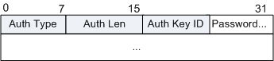

BFD控制报文封装在UDP报文中传送，对于单跳检测其UDP目的端口号为3784，对于多跳检测其UDP目的端口号为4784或3784。
BFD控制报文根据场景不同封装不同。BFD控制报文包括两部分：强制部分和可选的认证字段。不同的认证类型，认证字段的格式不同。
报文格式
BFD控制报文强制部分的格式如下（RFC5880）：

| 字段 | 长度 | 含义 |
|---|---|---|
| Version (Vers) | 3 bits | BFD协议版本号，目前为1。 |
| Diagnostic (Diag) | 5 bits | 诊断字，标明本地BFD系统最近一次会话状态发生变化的原因，取值及含义： 0 -- No Diagnostic 1 -- Control Detection Time Expired 2 -- Echo Function Failed 3 -- Neighbor Signaled Session Down 4 -- Forwarding Plane Reset 5 -- Path Down 6 -- Concatenated Path Down 7 -- Administratively Down 8 -- Reverse Concatenated Path Down 9-31 -- Reserved for future use |
| State (Sta) | 2 bits | BFD本地状态。 0 -- AdminDown 1 -- Down 2 -- Init 3 -- Up |
| Poll (P) | 1 bit | 参数发生改变时，发送方在BFD报文中置该标志，接收方必须立即响应该报文。
|
| Final (F) | 1 bit | 响应P标志置位的回应报文中必须将F标志置位。
|
| Control Plane Independent (C) | 1 bit | 转发/控制分离标志，一旦置位，控制平面的变化不影响BFD检测，如：控制平面为IS-IS，当IS-IS重启/GR时，BFD可以继续监测链路状态。
|
| Authentication Present (A) | 1 bit | 认证标识，置1代表会话需要进行验证。 |
| Demand (D) | 1 bit | 查询请求，置位代表发送方期望采用查询模式对链路进行监测。
|
| Multipoint (M) | 1 bit | 为BFD将来支持点对多点扩展而设的预留位。 |
| Detect Mult | 8 bits | 检测超时倍数，用于检测方计算检测超时时间。
|
| Length | 8 bits | 报文长度，单位为字节。 |
| My Discriminator | 32 bits | BFD会话连接本地标识符。发送系统产生的一个唯一的、非0鉴别值，用来区分一个系统的多个BFD会话。 |
| Your Discriminator | 32 bits | BFD会话连接远端标识符。从远端系统接收到的鉴别值，这个域直接返回接收到的“My Discriminator”，如果不知道这个值就返回0。 |
| Desired Min TX Interval | 32 bits | 本地支持的最小BFD报文发送间隔，单位为微秒。 |
| Required Min RX Interval | 32 bits | 本地支持的最小BFD报文接收间隔，单位为微秒。 |
| Required Min Echo RX Interval | 32 bits | 本地支持的最小Echo报文接收间隔，单位为微秒（如果本地不支持Echo功能，则设置0）。 |
| 字段 | 长度 | 含义 |
|---|---|---|
| Auth Type | 8 bits | BFD控制报文使用的认证类型。不同值表示的认证类型如下： 0 - Reserved 1 - Simple Password 2 - Keyed MD5 3 - Meticulous Keyed MD5 4 - Keyed SHA1 5 - Meticulous Keyed SHA1 6-255 - Reserved for future use |
| Auth Len | 8 bits | 认证字段的长度，包括认证类型与认证长度字段，单位为字节。 |
| Authentication Data | Variable | 认证字段净荷。 如果A比特位置1且认证类型值为1（Simple Password），则认证字段格式如下： 
如果A比特位置1切认证类型值为2（Keyed MD5）或3（Meticulous Keyed MD5），则认证字段格式如下：
如果A比特位置1切认证类型值为4（Keyed SHA1）或5（Meticulous Keyed SHA1），则认证字段格式如下：
|
报文示例
参考标准
| 标准 | 描述 |
|---|---|
| RFC 5880 | Bidirectional Forwarding Detection |